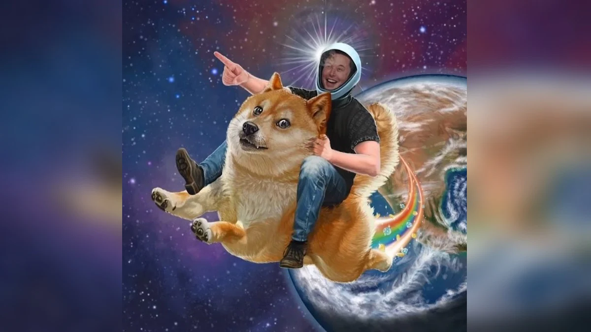
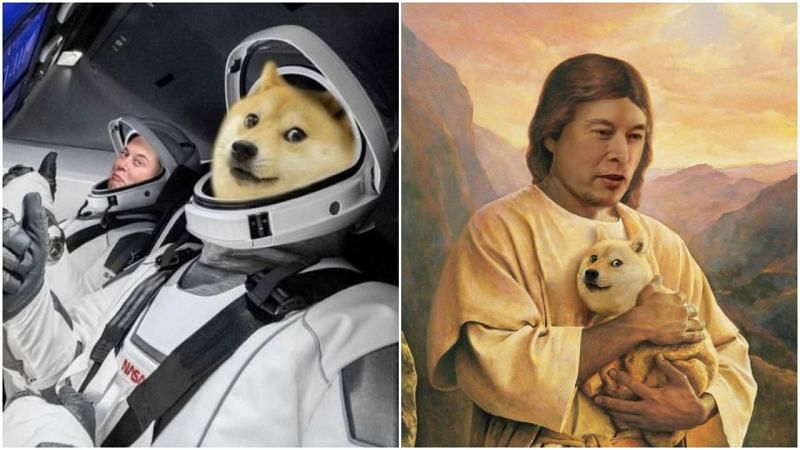
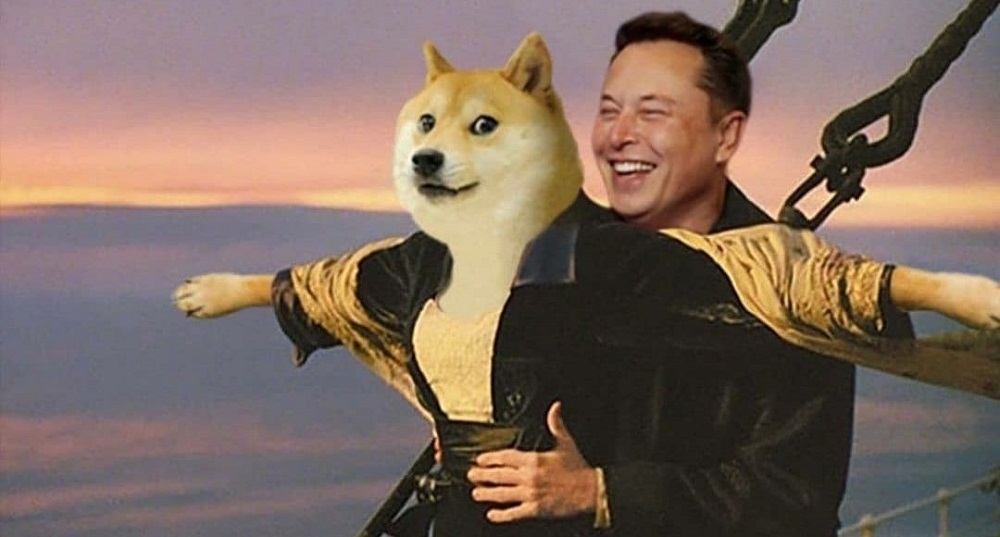
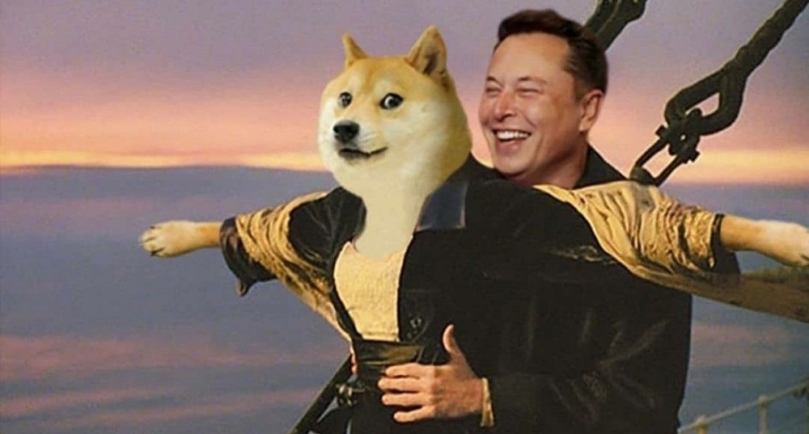
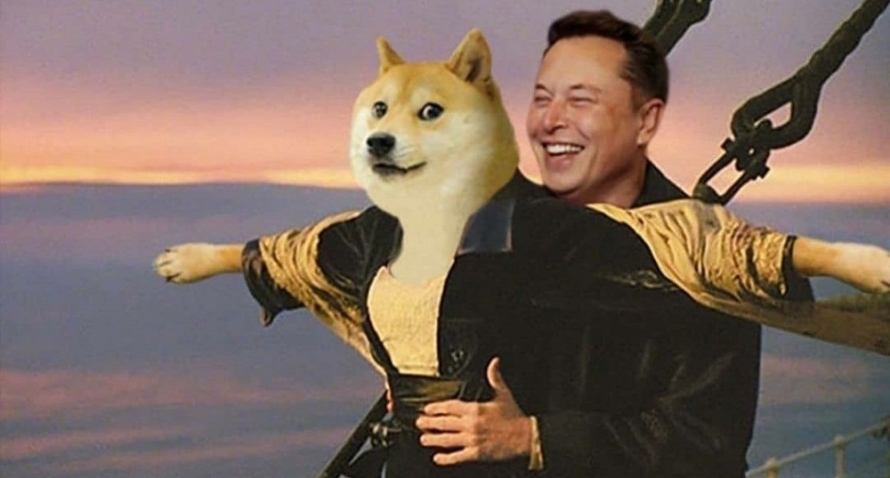

This is my website. It has multiple photos in 2 formats, the grid view and the slide view. It is mainly based on the doge coin and shiba inu coin which are now the trendy cryptocurrency
Shiba inu coin
SHIB, a new cryptocurrency, has already taken over some Dogecoin markets. The cryptocurrency has been dubbed the "DOGE killer" because its logo is a Shiba Inu dog breed. SHIB is a decentralized spontaneous community-building experiment developed within the SHIBA INU ecosystem. Shiba Inu (SHIB), also known as Shiba Token, is a decentralized cryptocurrency created by an anonymous person known as "Ryoshi" in August 2020. The creators intend to release the next coin, Bone Dogecoin Killer, in the near future.
Doge coin
Dogecoin (DOGE) is a cryptocurrency and digital payment platform which was created to reach a broader demographic than typical digital currencies. Dogecoin is referred to as a ‘joke currency’ or ‘meme coin’, since the coin began as a meme-inspired joke on the internet. DOGE coins can be used to conduct transactions with compatible vendors, however it has gained popularity as a currency for tipping content creators on the internet.
Read more at: https://www.goodreturns.in/classroom/shiba-inu-cryptocurrency-what-should-you-know-before-investing-in-this-coin/articlecontent-pf19317-1209493.html


Elon musk the father is holding the sacred animal, the evergreen and wonderful shiba inu (dog breed). After the rituals elonmusk takes the dog to the moon
elon musk takes the shiba inu to the moon
Elon musk lifts the wonderful shiba inu and takes it up
 
